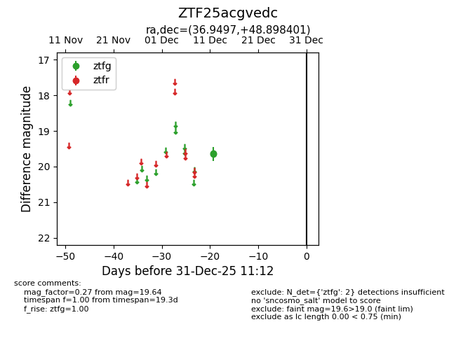
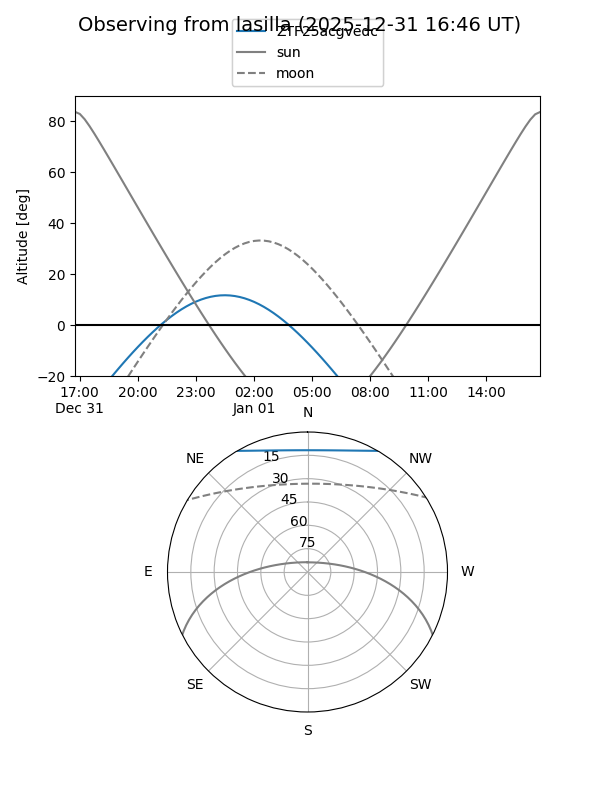
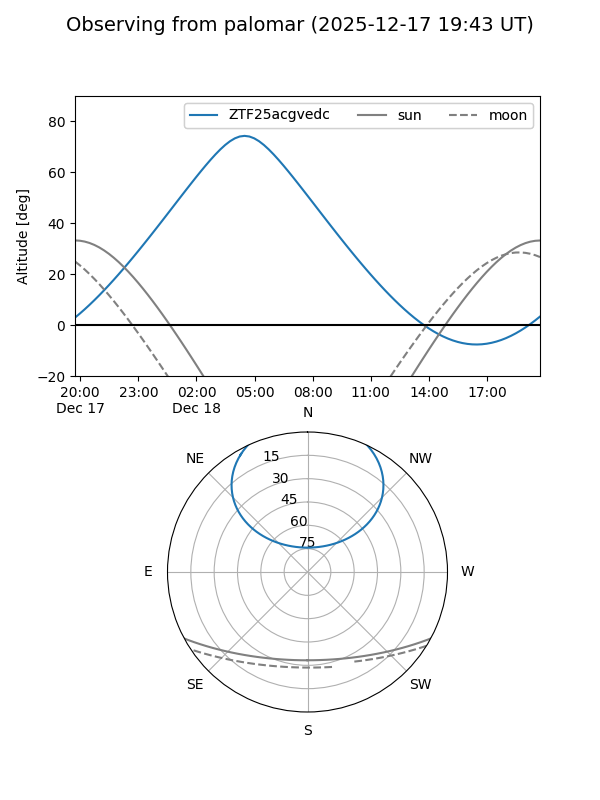

ZTF25acgvedc
Target ZTF25acgvedc at 2026-01-09 12:49
Aliases and brokers:
FINK: link
Lasair: link
ALeRCE: link
alt names
ZTF25acgvedc (ztf,fink_ztf)
Coordinates:
equatorial (ra, dec) = 36.9497,+48.89840
equatorial (HMS+DMS) = 02:27:47.93,+48:53:54.25
galactic (l, b) = (138.7950,-10.98271)
Flags:
Photometry:
last ztfg=19.64
2 ztfg detections
Lightcurve

Visibility


Additional plots